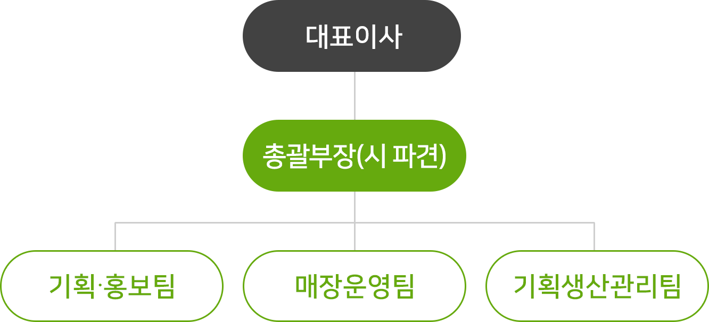

농업회사법인 세종로컬푸드 주식회사
세종시에서 생산되는 다양하고 신선한 농산물을 제공하는 역할을 전담하고 기획생산, 유통 마케팅 등을 체계적으로 수행하기 위해 설립된 농업회사법인 세종로컬푸드 주식회사는 세종시의 역점시책인 로컬푸드 운동을 통합적으로 수행하기 위한 운영 조직으로 로컬푸드 운동의 특성상, 공익성과 수익성을 충족하는 민관이 공동으로 출자해 설립한 법인입니다.
* 설립일 : 2015. 6. 29. 설립
조직 구성

인력(정∙현원)
| 구분 | 계 | 로컬푸드 직매장 | |
|---|---|---|---|
| 합계 | 16 | 16 | |
| 일반직 | 대표 이사 |
1 | 1 |
| 4급 (과장) |
- | - | |
| 5급 (팀장) |
1 | 1 | |
| 6급 (주임) |
8 | 8 | |
| 계산원 | 3 | 3 | |
| 파견 공무원 |
1 | 1 | |
| 계약직 | 2 | 2 | |
주요기능
| 구분 | 담당업무 |
|---|---|
| 기획·홍보팀 |
|
| 매장운영팀 |
|
| 기획생산 관리팀 |
|